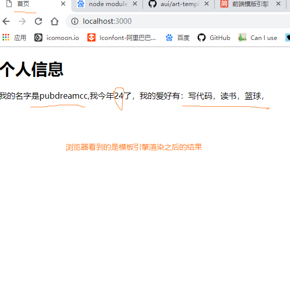

大家之前都有使用过浏览器中js模板引擎，其实在Node.js中也可以使用模板引擎，最早使用模板引擎的概念是在服务端新起的。
art-template是一款高性能的JavaScript 模板引擎，不仅可以在浏览器（前端）使用，同时也可以在Node中使用。
GitHub地址：art-template
文档：官方中文
本章节我们来探讨下Node中使用art-template模板引擎生成一个标准的HTML文档。
art-template原理就是将一个字符串数据按照模板引擎的语法替换掉其中的某些特定格式数据，然后产出我们所需的HTML文档。art-template支持两种语法：标准语法，原始语法，标准语法多以{{}}常见，原始语法多以<% %>常见。对于不清楚art-template语法的同学可以去官方文档看下，这里不做详细叙述。
安装art-template第三方包
在项目当前目录npm install art-template，默认会安装在项目当前node_modules文件夹下。
template.html文件，这里用来编写我们的模板html文档。具体代码如下：<!DOCTYPE html>
<html lang="zh">
<head>
<meta charset="UTF-8">
<title>{{Title}}</title>
</head>
<body>
<h1>{{main}}</h1>
<p>我的名字是{{name}},我今年{{age}}了，我的爱好有：{{each hobbies}}{{$value}}，{{/each}}</p>
</body>
</html>这里使用art-template的标准语法，编写的时候一定按照正确的模板语法，否则会导致结果有误。
server.js，用来创建服务器，并且引入art-template包。let http = require('http')
let fs = require('fs')
let template = require('art-template')
let server = http.createServer()
server.on('request', (req, res) => {
let url = req.url
if (url === '/') {
// 读取template.html中的内容，并且转换成字符串格式
fs.readFile('./template.html', (error, data) => {
if (error) {
return res.end('can not find template.html')
}
let dataStr = data.toString()
let htmlStr = template.render(dataStr, {
name: 'pubdreamcc',
Title: '首页',
main: '个人信息',
age: 24,
hobbies: ['写代码', '读书', '篮球']
}) // template.render()方法编译模板文档并返回渲染结果。
res.end(htmlStr)
})
} else {
res.end('404 NOT found')
}
})
// 绑定端口号，开启服务器
server.listen(3000, () => {
console.log('服务器已经启动，可以访问。。。')
})

到这里就已经实现了我们起初的效果，应该比较简单吧，哈哈。如果喜欢的话，希望小伙伴们给个star哟，你们的点赞是我持续更新的动力。
本仓库是自己Node.js学习过程的真实记录，以后会每天更新一些新的知识点，希望可以对想要学Node.js的同学有一些帮助，欢迎star，你们的点赞是我更新的持久动力。同时如果你觉得本仓库中的一些知识点有错误也可以issue我，方便后期我订正！
本仓库同时在博客园和掘金更新，欢迎写博客的朋友一起学习交流。
博客园
掘金
GitHub